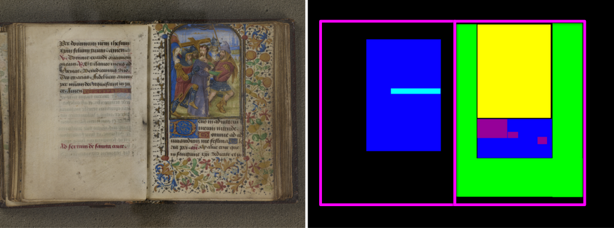

From psalms to patterns:
large-scale detection of liturgical structures in Books of Hours through text reuse detection
Svetlana Yatsyk – IRHT – DH2025
Introduction
Project Overview
HORAE Project
- ANR-17-CE38-0008
- Period: 2018–2022
Cross-disciplinary Nature
- Computer Vision
- Natural Language Processing
- Book History
Partners
- IRHT (CNRS) – France
Dominique Stutzmann, Louis Chevalier, Laura Lebarbey, Jacob Currie - Teklia – France
Christopher Kermorvant, Marie-Laurence Bonhomme, Mélanie Boillet - LS2N – Nantes
Béatrice Daille, Amir Hazem
Canonical Hours
- Matins – at midnight
- Lauds – in the early morning
- Prime – first hour of the daylight
- Terce – at 9 AM
- Sext – at noon
- None – at 3 PM
- Vespers – at sunset
- Compline (Completorium) – at the end of the day.
Books of Hours

- Late medieval bestsellers (>10 000 copies)
- For religious practices of rich lay people
- Highly structured
- Lavishly illuminated.
Structure of the Books of Hours
- Liturgical calendar
- Four gospel pericopes
- Hours of the Virgin (Officium parvum beatae Mariae Virginis)
- Hours of the Cross
- Hours of the Holy Spirit
- The office of the dead (Officium Defunctorum)
- Penitential psalms
- Hours of the passion
- Suffrages
- The litany of the saints…
Book of Hours: granularity
-
Book of Hours
- Calendar
- Gospel lessons
-
Hours of the Virgin
-
Matins
-
Invitatory
-
Versicles & Responses
- Vers.
- Resp.
- Gloria
-
Psalm 94
- Antiphon
-
Psalm
- Ps 94:1-2
- Antiphon
- Ps 94:3-4
- Antiphon part 2
- Ps 94:5-7
- Antiphon
- Ps 94:8-9
- Antiphon part 2
-
- Hymn
-
Nocturns
-
Nocturn 1
-
Psalms
- Psalm 1
- Psalm 2
- etc
- Versicles & Responses
- Lord’s Prayer
- Absolution
-
Lessons
-
Lesson 1
- Blessing
- Lesson 1
-
Responsory 1
- Respond
- Verse
- Partial respond
- Lesser doxology
- Lesson 2
- Etc.
-
-
- Nocturn 2
- Nocturn 3
-
- Canticle
-
- Lauds
- Prime
- Terce
- Sext
- None
- Vespers
- Compline
-
- Hours of the Cross & Holy Spirit
- Penitential Psalms and Litany
- Office of the Dead
- Obsecro te, O intemerata
- Suffrages
- Accessory texts
Source:
Dominique Stutzmann, Jacob Currie, Béatrice Daille, Amir Hazem, Christopher Kermorvant. Integrated DH. Rationale of the HORAE Research Project. Digital Humanities Conference, Jul 2019, Utrecht, Netherlands.
Goals
Using text reuse detection tools, find psalms and other texts in the Books of Hours in order to:
- describe their contents and improve the cataloguing
- study manuscripts’ circulation and origins.
Corpus overview
- 1 113 manuscripts, 45 early printed books
- 1 116 HTR-sed
- 302 772 pages
- 13th to 16th centuries
- available on Arkindex.
- 24 830 miniatures
- 1 778 552 initials.
It also holds:
1. Data collection and processing
- Image collection via the IIIF protocol
- Image segmentation: detection of initials, miniatures, and text zones
- Automatic transcription by TEKLIA using a Kaldi-based model.

Source:
Béatrice Daille, Amir Hazem, Christopher Kermorvant, Martin Maarand, Marie-Laurence Bonhomme, et al.
Transcription automatique et segmentation thématique de livres d'heures manuscrits.
Revue TAL : traitement automatique des langues, 2019, TAL et humanités numériques, 60(3), pp.13–36. (updated)
| Entraînement | Validation | Test | |
|---|---|---|---|
| WER | 14.51 | 24.46 | 34.19 |
| WER (rescored) | – | 32.36 | 26.32 |
| CER | 8.93 | 11.07 | 11.21 |
| CER (rescored) | – | 14.10 | 9.90 |
2. Text reuse detection with passim
Challenges
- Noisy HTR data
- Little to no ground truth available for training or evaluation
- Large amount of data to process (by medievalist standards).
Text reuse detection with passim
- An open-source tool developed by David A. Smith.
- Project repository: github.com/dasmiq/passim
- Introduction and tutorial: Matteo Romanello & Simon Hengchen, Detecting Text Reuse with Passim, Programming Historian, 2021
-
Best evaluation results on our data:
Precision: 0.76, recall: 0.51, F1 Score: 0.61
Passim output in jsonl
"uid": -7747811833890938386,
"cluster": 1, "begin": 231, "end": 379, "id": 398134, "series": "psalms",
"text": "animam meam humiliavit in terra vitam meam. Collocavit me in obscuris sicut mortuos seculi et anxiatus est super me spiritus meus in me turbatum es"
---
"uid": -1932149852289013984, "cluster": 1, "begin": 0, "end": 153,
"src": [{"uid": -7747811833890938386, "begin": 231, "end": 379}],
"id": 202,
"series": "États-Unis, Baltimore, The Walters Art Museum, W.0085_HTR",
"text": "animam meam humi miliavit in terra vitam meam Tollocavit me Filii obscuris sicut mortuos seculi et anxiatus est super me spiritus meus in me turbatum est"
3. Psalm sequence extraction and validation
Prediction validation
Manuscript classification by use?
Psalm clusters shared by uses
Next steps
- Short and very short text detection
- Distinguishing between complete psalms and their fragments (antiphons etc)
Bibliography
- Mélodie Boillet, Marie-Laurence Bonhomme, Dominique Stutzmann, and Christopher Kermorvant. HORAE: an annotated dataset of books of hours. Proceedings of The 5th International Workshop on Historical Document Imaging and Processing, Sydney, NSW, Australia, September 20–21, 2019 (HIP’19).
- Béatrice Daille, Amir Hazem, Christopher Kermorvant, Martin Maarand, Marie-Laurence Bonhomme, et al. Transcription automatique et segmentation thématique de livres d'heures manuscrits. Revue TAL : traitement automatique des langues, 2019, TAL et humanités numériques, 60(3), pp. 13–36.
- Dominique Stutzmann, Jacob Currie, Béatrice Daille, Amir Hazem, Christopher Kermorvant. Integrated DH. Rationale of the HORAE Research Project. Digital Humanities Conference, Jul 2019, Utrecht, Netherlands.
Thank you!
svetlana.yatsyk@cnrs.fr